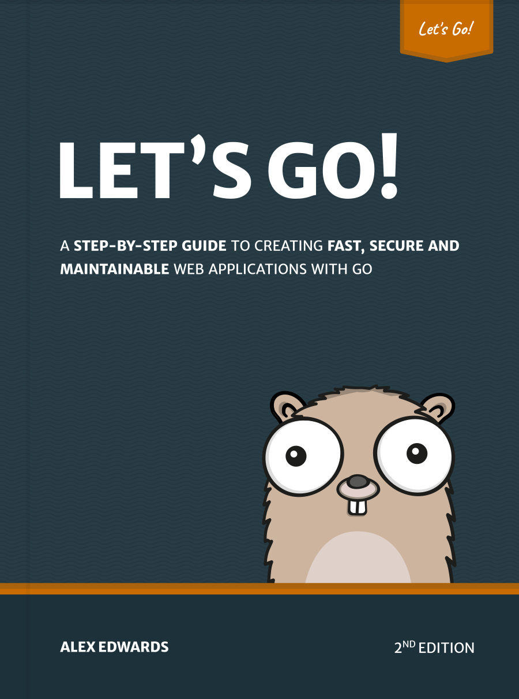

مقدمه

کتاب بیایید با Go برنامهنویسی کنیم به شما میآموزد که چگونه گام به گام برنامههای وب سریع، امن و قابل نگهداری را با استفاده از زبان برنامهنویسی فوقالعاده Go ایجاد کنید.
ایده پشت این کتاب کمک به شما برای یادگیری با انجام دادن است. ما با هم قدم به قدم ساخت یک برنامه وب را از ابتدا تا انتها طی خواهیم کرد — از ساختاردهی فضای کاری شما گرفته تا مدیریت جلسات، احراز هویت کاربران، امنسازی سرور و تست برنامه شما.
ساخت یک برنامه وب کامل به این روش چندین مزیت دارد. به شما کمک میکند تا آنچه را که یاد میگیرید در متن مناسب قرار دهید، نشان میدهد که چگونه بخشهای مختلف کد شما به هم مرتبط میشوند، و ما را مجبور میکند تا با موارد خاص و دشواریهایی که در نوشتن نرمافزار در زندگی واقعی با آنها مواجه میشویم، دست و پنجه نرم کنیم. در اصل، شما بیش از آنچه که فقط با خواندن مستندات (عالی) Go یا پستهای وبلاگ مستقل یاد میگیرید، خواهید آموخت.
در پایان این کتاب، شما درک و اعتماد به نفس لازم برای ساخت برنامههای وب آماده تولید خود را با Go خواهید داشت.
اگرچه میتوانید این کتاب را از ابتدا تا انتها بخوانید، اما به طور خاص طراحی شده تا بتوانید همراه با ساخت پروژه، آن را دنبال کنید.
ویرایشگر متن خود را باز کنید و با شادی کدنویسی کنید!